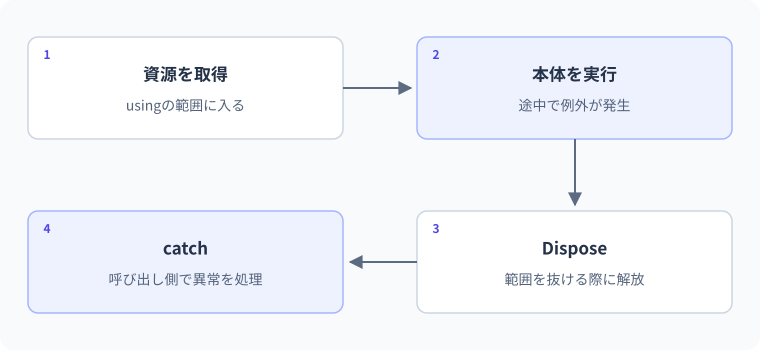

例外処理とusing
例外が発生したときの資源の解放。
失敗した行の次へそのまま進むとは限りません。例外が起きたときの経路を確認した後で、正常終了でも失敗でも後始末が必要な資源をusingで管理します。
要点
using var reader = new StringReader(text);失敗をcatchへ伝える経路
例外処理は「落ちないように全部catchする」ことではありません。正常な失敗と契約違反を分け、回復できる場所で処理し、必要な情報を残しながら資源を確実に片付けます。usingディレクティブとは異なるusingの意味もここで整理します。
例外は失敗の情報
try/catch/finallyは、失敗し得る処理と、その失敗から回復する処理、必ず行う後始末を分ける構文です。C#にはメソッド宣言で特定例外の捕捉を強制する仕組みはありません。それでも例外設計が不要なわけではなく、通信、ファイル、変換など失敗し得る境界を把握します。入力の単純な変換失敗ならTryParse、契約違反ならArgumentExceptionなど、意図に合う手段を選びます。
例外が発生した後の制御フロー
tryの中で例外が発生すると、その位置より後の通常処理は飛ばされ、型が対応するcatchが探されます。同じtryの続きから自動的に再開するわけではありません。対応するcatchがなければ呼び出し元へ伝わります。処理できる場所で捕捉するため、すべてのメソッドへtry/catchを付ける必要はありません。
FormatExceptionだけ処理できる場所でException全体を捕捉すると、プログラムの欠陥や別種の障害まで同じ入力エラーとして隠してしまいます。一般的なcatchを置く場合は最上位の境界など、役割が説明できる位置へ置きます。通常の入力ミスはTryParse、契約違反はArgumentException系、I/O失敗は対応する例外など、発生の意味で整理します。
tryの途中で例外が発生したとき、同じtryの後続行を続けるわけではありません。
- 1tryへ入る
通常の処理を進める - 2例外が発生
try内の後続行を飛ばす - 3対応するcatch
例外に合う処理へ移る - 4後続へ
処理できた場合はtry/catchの後へ
catch後の処理へ進めるか、呼び出し元へ例外を伝えるかは、処理の書き方に従います。エラーがあったのに成功時の処理を続けないように経路を読みます。
catchの順序と再スロー
派生例外を先、基底例外を後に書くのが基本です。Exceptionを先に捕捉すると、後ろの具体例外へ到達できません。catch whenは型だけでなく状態を条件にして捕捉するフィルターです。たとえばキャンセルが自分の要求によるものかを判断する場面で利用します。
捕捉した例外をそのまま上へ伝えるならthrow;を使います。throw ex;ではスタックトレースの起点情報が変わり、元の失敗箇所を追いにくくなります。別の意味の例外へ包み直す必要があるなら、元の例外をInnerExceptionとして保持するなど、調査に必要な文脈を残します。秘密情報はそのまま利用者へ返さないよう、記録と公開メッセージを分けます。
変換失敗をFormatExceptionで受け取る
using var reader = new StringReader("C#\n.NET");
Console.WriteLine(reader.ReadLine());
try
{
int value = int.Parse("not-a-number");
Console.WriteLine(value);
}
catch (FormatException)
{
Console.WriteLine("整数として読めませんでした");
}この例では最初にC#を表示し、その後のint.ParseでFormatExceptionが発生します。
- 通常の処理通常の処理
- 通常の処理Parse
- Parsecatch
- catch通常の処理
valueを表示する行は飛ばされます。表示されるのは最初のC#と、catchに書いた「整数として読めませんでした」です。
想定出力
処理順
- readerはスコープの終わりで破棄されるように管理される。
- ParseがFormatExceptionを投げる。
- 対応するcatchで表示し、スコープ終了時にはDisposeも行われる。
失敗を隠さず呼び出し元へ伝える
握りつぶすと調査できない
catch (Exception) { }で何もしないと、不正な状態のまま処理が続き、原因も失われます。ユーザーへ再入力を促す、ログを残して上位へ伝えるなど、回復方法を決めます。同じ例外をそのまま投げ直す場合はthrow;を使うと元のスタック情報を保てます。秘密情報をエラーメッセージへ混ぜないことも重要です。
よくある間違いと修正
解析エラーを握りつぶして成功扱いする
修正箇所: catchの内容と捕捉する例外型
修正前
try { int.Parse("abc"); }
catch (Exception) { }
Console.WriteLine("成功");修正後
try
{
int value = int.Parse("abc");
Console.WriteLine($"成功: {value}");
}
catch (FormatException)
{
Console.WriteLine("整数として解析できません");
}修正後の確認
- abcで解析できませんと表示
- 12で成功:12と表示
- 別種の障害を無条件に成功扱いしない
資源を使える範囲と後始末
usingは後始末を保証する
using var reader = new StringReader(...);のように宣言すると、そのスコープを抜けるときにDisposeが呼ばれます。途中で例外やreturnがあっても後始末されます。GCはメモリ管理、Disposeはファイルハンドルや接続などの解放を含む明示的な後始末です。所有するリソースの寿命をスコープへ結び付けるために使います。
GCとDisposeは役割が違う
ガベージコレクションは到達不能になったマネージドオブジェクトのメモリ回収を担います。一方、開いたファイル、ソケットなどの資源を必要な時点で解放することはDisposeなどの契約で扱います。GCがいつ回収するかを待つと、ファイルロックや接続が長く残ることがあります。
IDisposableを実装するオブジェクトをusingで扱うと、通常のスコープ終了、return、例外で抜ける経路でもDisposeが呼ばれるように構成されます。ただしプロセス強制終了など、すべての終了状況で保証されるという意味ではありません。Disposeは「その変数を使えなくする構文」ではなく、資源の利用を終える操作です。
GCがあるからといって、ファイルや接続の後始末をいつでも任せてよいわけではありません。
不要なマネージドオブジェクトのメモリを回収回収時刻を通常は指定しない
使い終わった資源を解放する処理の範囲に合わせて後始末する
usingは、所有するIDisposableの資源を使い終える範囲をコードで示します。不要になったマネージドメモリの回収を管理するGCとは役割が異なります。
using宣言のスコープと所有権
using var reader = ...;は宣言したスコープの終わりで後始末します。using (...) { ... }なら指定したブロックで終わります。長いメソッドの先頭でusing宣言をすると、実際には使い終わった後もスコープ終了まで資源を保持する場合があります。解放したい範囲に合わせてブロックを選びます。
自分が作って所有する資源を自分で片付けるのが基本です。他者から借りた列挙処理を勝手にDisposeすると、呼び出し側が続けて使えなくなることがあります。APIの所有権の契約を確認してください。非同期の後始末が必要ならIAsyncDisposableとawait usingという仕組みもあり、同期版と同じ目的を非同期処理で扱います。
C#仕様の整理
| 観点 | C#での扱い | 読み方・設計上の要点 |
|---|---|---|
| 資源管理 | using文/using宣言 | 通常終了だけでなく例外経路も片付ける |
| チェック例外 | 同じチェック例外の強制はない | 起こり得る失敗は契約として説明する |
| 再スロー | 同じ例外はthrow;を使う | 元の調査情報を失わない |
| 名前空間のusing | using System.IO; | using varとは意味を分ける |
例外でもDisposeが呼ばれる順序
try
{
using var resource = new TrackedResource();
Console.WriteLine("処理中");
throw new InvalidOperationException("学習用の失敗");
}
catch (InvalidOperationException)
{
Console.WriteLine("捕捉");
}
Console.WriteLine("終了");
public sealed class TrackedResource : IDisposable
{
public TrackedResource() => Console.WriteLine("開始");
public void Dispose() => Console.WriteLine("解放");
}出力
| 段階 | 値・状態 | 読み解き |
|---|---|---|
| new | 開始を表示 | 資源の所有者になる |
| 通常処理 | 処理中を表示 | 次のthrowで通常経路を中断 |
| tryブロックを抜ける | Disposeで解放を表示 | catchへ入る前にusingのスコープを片付ける |
| catch | 捕捉を表示 | 対応する例外だけを処理 |
| 後続 | 終了を表示 | try内の途中ではなくtry/catchの後へ進む |
実例：一行ずつ読み、読み取りを終了する
StringReaderを使い、外部ファイルを作らずに資源のスコープを確認します。
using System.IO;
using (var reader = new StringReader("ノート\nペン"))
{
string? line;
while ((line = reader.ReadLine()) is not null)
Console.WriteLine(line);
}
Console.WriteLine("読み取り終了");このコードの図解：例外が発生したときの資源の解放

想定出力
ノート
ペン
読み取り終了処理と値の変化
- StringReader文字列を行単位で読むオブジェクトを作る
- ReadLine終端ではnullを返し、ループを終える
- usingの終端readerのDisposeが呼ばれる
文字列を空にするとReadLineは最初からnullで、読み取り終了だけを表示します。
基礎・標準・応用演習
C#実行環境：.NET 10 SDK
基礎演習
GuardAgeメソッドで負数ならArgumentOutOfRangeExceptionを投げ、呼び出し側でその例外だけを捕捉して「年齢が不正」と表示してください。
開始コード
// GuardAge(-1)をtry/catchで呼ぶ。入力例・前提条件
負の年齢でGuardAgeを呼び、ArgumentOutOfRangeExceptionだけを捕捉する。
考え方のヒント
引数チェックはメソッド内、利用者向けの表示は呼び出し側へ置く。
解答例と確認ポイント
try
{
GuardAge(-1);
}
catch (ArgumentOutOfRangeException)
{
Console.WriteLine("年齢が不正");
}
static void GuardAge(int age)
{
if (age < 0) throw new ArgumentOutOfRangeException(nameof(age));
}| 解答で確認する条件 | 確認方法 |
|---|---|
| 年齢が不正と表示される。 | コードと想定結果を照合 |
| catch対象を必要な例外型へ絞る。 | コードと想定結果を照合 |
処理と結果の読み解き
負数では通常の後続へ進まず例外が外へ伝わり、対応するcatchで年齢が不正と表示する。0以上は正常に戻る。
よくある別解と選び方
想定される入力ミスをboolで返す設計もある。今回は例外による契約違反の伝達を理解する。
よくある間違いと確認箇所
全ての例外をcatchして同じ年齢エラーにすると、無関係な不具合を隠す。期待する型に絞る。
実務例：内部の前提違反と、表示側での案内を分離して扱う。
標準：行を読みながら資源を閉じる
StringReaderで「C#\n.NET」を一行ずつ読み、最後に件数2を表示します。usingを使い、ReadLineがnullになったら終了してください。
- ReadLineは末尾でnullを返す
- 読み取りとnull判定をwhile条件へまとめられる
- 後始末を手書きで各経路に重複させない
開始コード
// 標準：行を読みながら資源を閉じる
// 課題とテストケースを読んで、自分で実装してください。
入力例・前提条件
StringReaderの内容はC#、改行、.NET。読み終えたらReadLineはnull。
考え方のヒント
読み取った一行を変数に受け、nullではない間だけ表示と件数加算を行う。
解答例と確認ポイント
using var reader = new StringReader("C#\n.NET");
int count = 0;
string? line;
while ((line = reader.ReadLine()) is not null)
{
Console.WriteLine(line);
count++;
}
Console.WriteLine($"件数: {count}");想定出力
- ReadLineの戻り値を変数へ受け取り、nullではない間だけ処理する。
- 空行は空文字でありnullではないので、行として数える。
- StringReaderはメモリ上の例だが、所有する読み取り資源のスコープ管理の形を学べる。
| 入力 / 条件 | 期待結果 |
|---|---|
| C#と.NETの2行 | 件数2 |
| 空文字 | 件数0 |
| 改行だけ | 空行1件として数える |
処理と結果の読み解き
一行目で1、二行目で2、次のnullでは加算しない。usingを抜けると資源の利用を終える。空文字の行と末尾のnullは別の状態。
よくある別解と選び方
while条件で代入する形が読みにくければ、ループ内で読み取り、nullならbreakとしてもよい。
よくある間違いと確認箇所
"\n"という改行表現と、二文字のバックスラッシュnを表す入力を混同しない。実際の内容と行数を確認する。
実務例：ファイルやストリームを読み、終端と空のデータを区別する処理につながる。
応用：再スローで境界へ伝える
Validateで負数なら例外、Middleでは調査用メッセージを出してthrow;、外側で「入力を確認」と表示します。Middleが成功値へ変えて隠さない形にしてください。
- Middleのcatchではthrow;を使う
- 外側も具体的な例外型で捕捉する
- 表示される順番を予測する
開始コード
// 応用：再スローで境界へ伝える
// 課題とテストケースを読んで、自分で実装してください。
入力例・前提条件
Validateが負数で失敗し、Middleが調査表示後に再送出する。
考え方のヒント
catch内のthrow;は受け取った例外を引き続き外へ伝える形。
解答例と確認ポイント
try { Middle(-1); }
catch (ArgumentOutOfRangeException) { Console.WriteLine("入力を確認"); }
static void Middle(int value)
{
try { Validate(value); }
catch (ArgumentOutOfRangeException)
{
Console.WriteLine("中間層で失敗を確認");
throw;
}
}
static void Validate(int value)
{
if (value < 0) throw new ArgumentOutOfRangeException(nameof(value));
}想定出力
- 内側のcatchは調査情報を加える例で、ここでは回復しないので再スローする。
- throw;が元の例外を伝え、外側の境界で利用者向けの処理へ変換する。
- 実務では各層が同じ例外を重複ログにしないよう、記録責任を決める。この二段表示は流れを観察する学習用である。
| 入力 / 条件 | 期待結果 |
|---|---|
| -1 | 二段階の表示 |
| 0 | 例外なし・表示なし |
| throw;を削除 | 外側へ伝わらないので要件を満たさない |
処理と結果の読み解き
Validate→Middleのcatch→外側のcatchの順に進む。Middleはログ相当の表示を追加しても成功値へ変換せず、外側が入力確認を案内する。
よくある別解と選び方
Middleで追加情報が不要ならcatchせずそのまま伝える方が簡潔である。何のために捕捉するかを明確にする。
よくある間違いと確認箇所
throw ex;で元のスタック情報を扱いにくくしたり、returnで成功へ隠したりしない。原因を追える伝播を保つ。
実務例：例外を各層で重複記録せず、役割のある境界で文脈を付けて扱う。
確認問題
理解チェックと公式資料
- 正常失敗と契約違反の表現を選べる
- catchでどこからどこへ進むか追える
- throw;とthrow ex;を区別できる
- GCとDispose、所有と借用を区別できる
公式一次情報
公式資料
確認日：2026年9月14日。本文の理解を補うための資料です。学習対象は.NET 10 / C# 14です。パッチ番号は固定しません。